Bezbedna prva igračka za tvoju bebu
Ručno heklane amigurumi lutke za bebe i malu decu, mekane, bezbedne i napravljene da se grle i grickaju.
Ručno heklane lutke za bebe i malu decu, mekane i bezbedne.


Izaberi po vrsti
Svaka lutka ima svoj karakter
Lutke koje sama osmislim
Pored likova iz crtanih filmova, heklam i po šemama koje sama pravim.
Amigurumi od samog početka
Među prvima u Srbiji sam savladala japansku amigurumi tehniku.
Smeju da se grle i vuku za uši
Mekane, napravljene da se grle i grickaju.
Kako nastaje lutka

Biram materijal
namenjeno igračkama.

Heklam ručno

Proveravam svaki šav
mogu da se odvoje.

Od Starog Priboja do malenih ručica širom sveta.
Pletem od detinjstva, prvo kapice i patikice za bebe, a onda sve više. Danas pravim lutke za bebe i malu decu širom sveta, a heklam i kompletiće za bebe do godinu dana.
Pročitaj celu priču i pogledaj video →Česta pitanja
Ne vidiš svoje pitanje? Piši mi na Instagramu.
Piši mi na Instagramu (@hand_made_melli) i reci koja lutka ti se dopala.
Od 2 do 5 dana, u zavisnosti od modela.
Brzom poštom, preko Post Expressa.
Za cenu pošaljite poruku u DM na Instagramu.
Lutke pravim za bebe i malu decu, a kompletiće za bebe do godinu dana.
Periva je u mašini ili ručno na 30 °C. Ne sušiti u mašini za sušenje.
Da. Pošaljite poruku u DM na Instagramu i opišite kakvu lutku želite.

Heklam lutke koje smeju da se grle i vuku za uši.
Pribojka sam i među prvima u Srbiji sam savladala japansku amigurumi tehniku. Danas pravim lutke za bebe i malu decu širom sveta, a heklam i kompletiće za bebe do godinu dana: kape, trake za kosu i cipelice.
Pletem još od detinjstva. Prvo kapice i patikice za bebe, a onda sve više.
Prva je bila neuspeh kome se cela kuća smejala. Nisam odustala, a danas pravim i svoje šeme.
Pravim mede, zeke i likove iz crtanih filmova, i meduze za prevremeno rođene bebe.
Moja priča
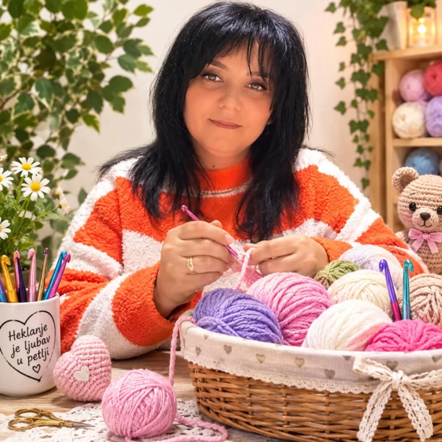
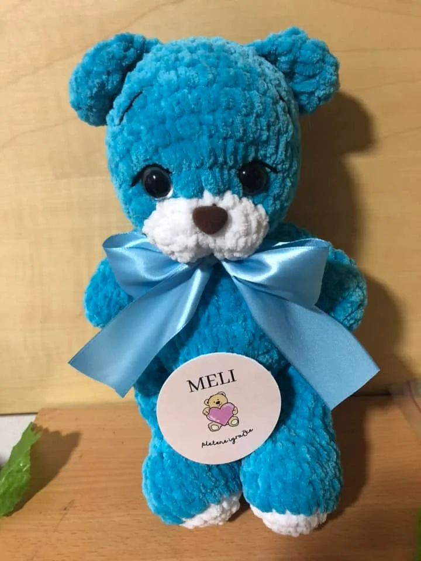
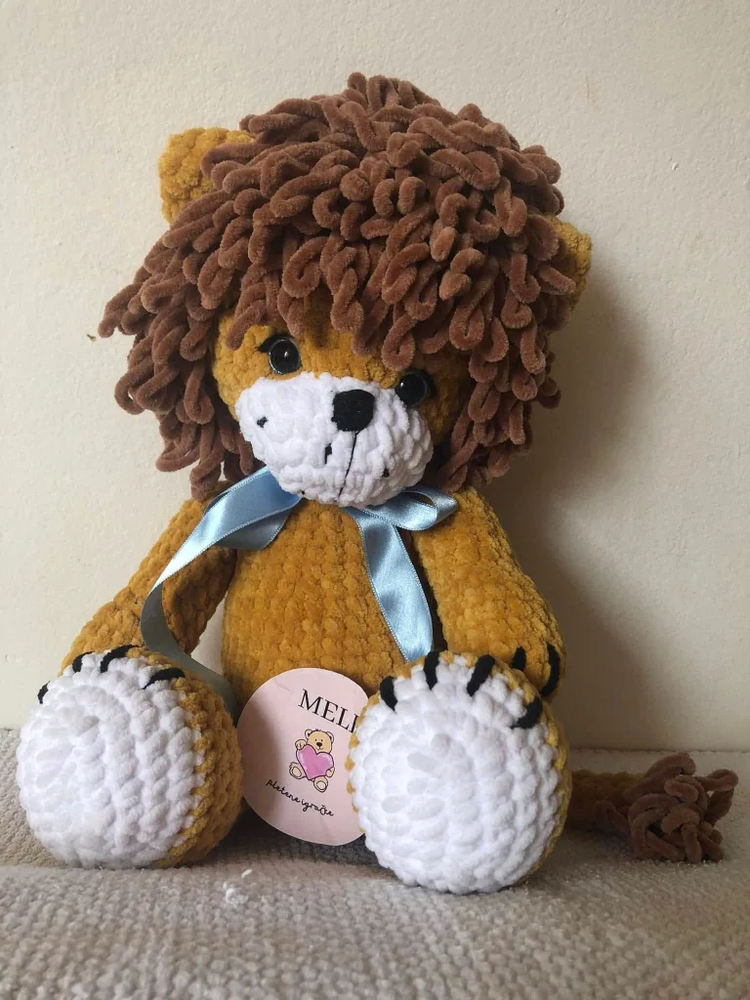
Galerija


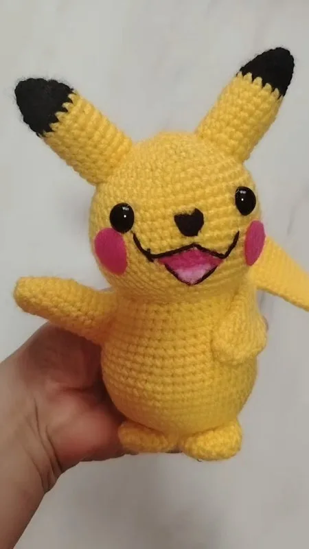
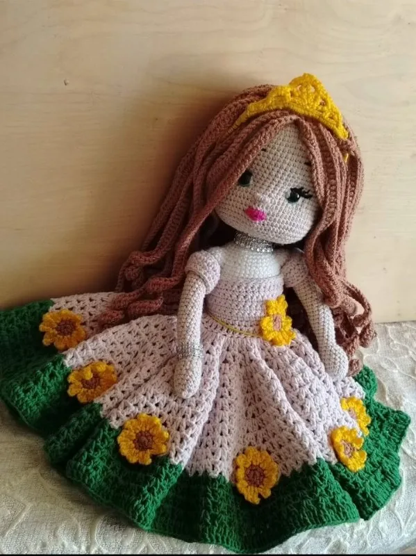
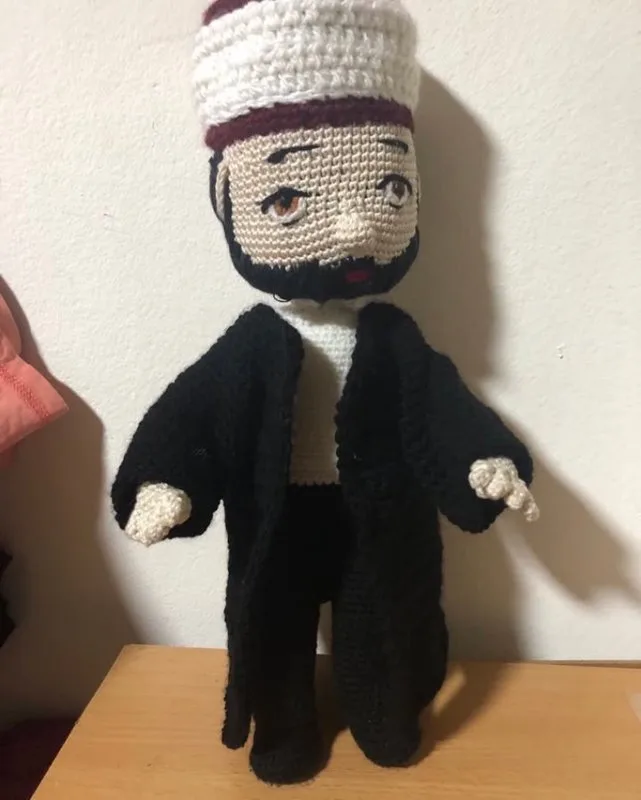
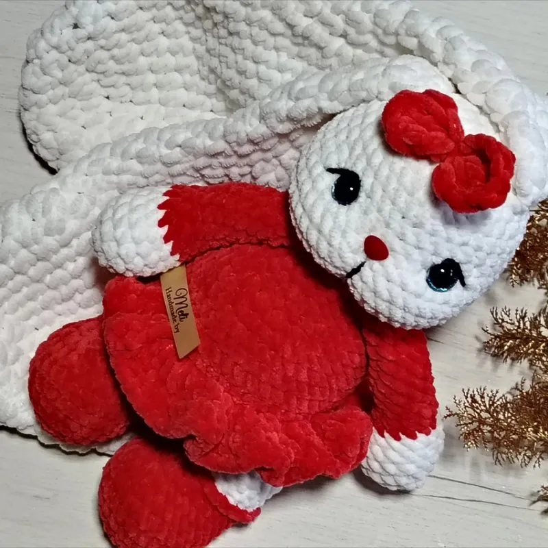
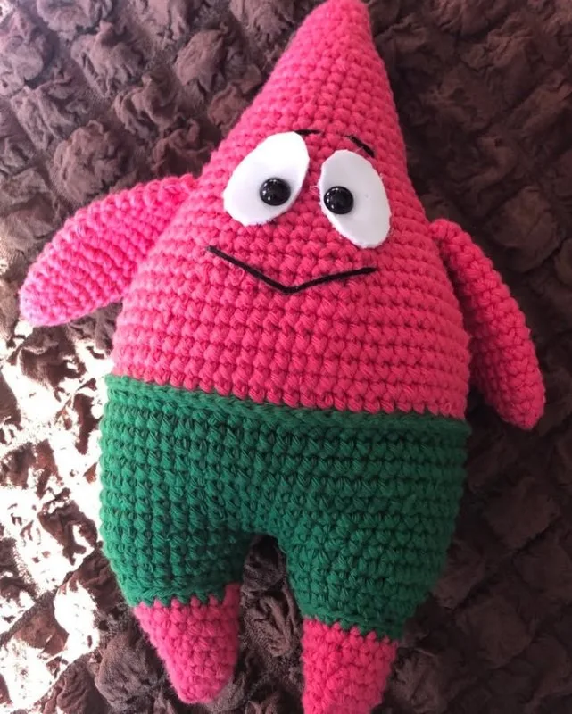
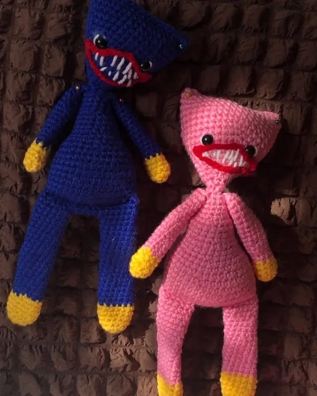
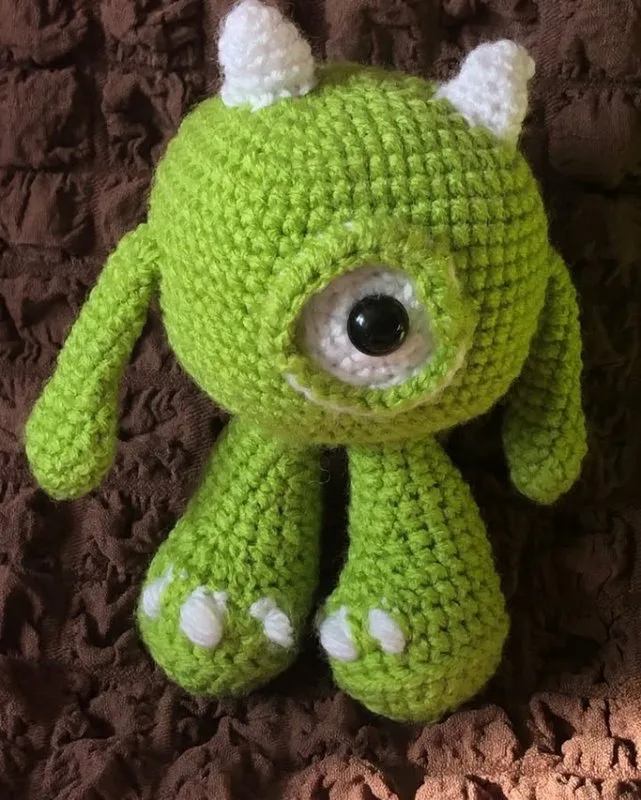
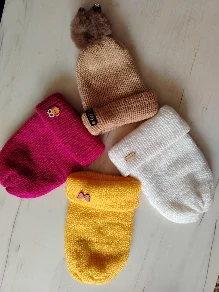
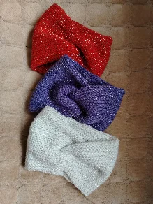
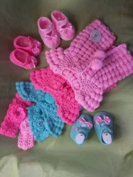
Piši mi na Instagramu
Tamo odgovaram na pitanja o lutkama i materijalima, a možeš da vidiš i nove lutke čim nastanu.
Otvori Instagram ↗